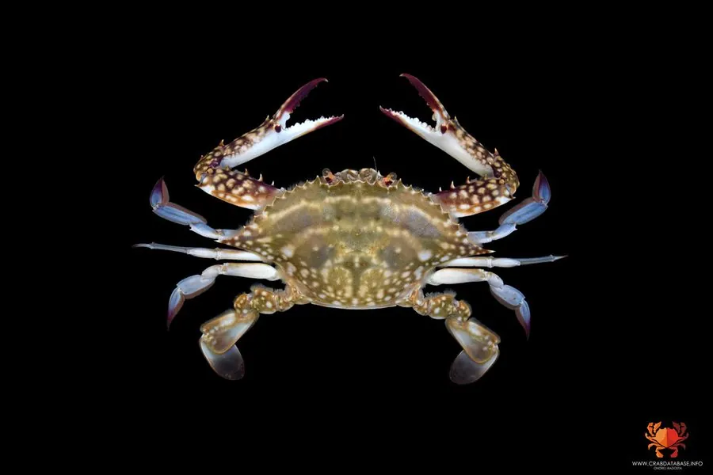

甲壳动物 · 动物界
三疣梭子蟹 Portunus trituberculatus

中国沿海重要的经济蟹类，头胸甲呈梭形，末对步足特化成扁平游泳足，雄性甲面有三个疣状突起，肉味鲜美。
- 分类
- 门节肢动物门纲软甲纲目十足目科梭子蟹科属梭子蟹属
- 栖息环境
- 近岸浅海、河口与沙泥底质水域，冬季移向深水越冬
- 地理分布
- 中国渤海、黄海、东海以及朝鲜半岛和日本沿海
- 保护级别
- 暂无评估
物种志
三疣梭子蟹头胸甲呈梭形，宽约为长的两倍，表面有 3 个疣状突起，分别位于胃区和心区，三疣之名由此而来。甲缘有锯齿，体色随栖息环境变化，多为青褐或蓝褐色；末对步足扁平如桨，是它善于游泳的关键。雌蟹腹部圆形，雄蟹腹部三角形。
它生活在近岸浅海、河口和沙泥底质水域，昼伏夜出，白天常潜沙埋伏，夜间出来捕食贝类、小鱼和虾蟹，攻击性强，同类相残常见。冬季向深水区越冬，春季洄游到浅海繁殖，雌蟹一次产卵可达数十万粒，卵附着在腹肢上孵化。三疣梭子蟹分布在中国渤海、黄海、东海以及朝鲜半岛和日本沿海，是中国主要的海捕和养殖蟹种之一，肉味鲜美，经济价值高。
形态与习性
- 食性捕食贝类、小鱼、虾蟹与底栖动物
- 体型头胸甲宽约 15–20 cm，常见体重 150–400 g
- 寿命一般 1–2 年
- 繁殖雌蟹一次产卵可达数十万粒
- 习性昼伏夜出，常潜沙埋伏，冬季洄游深水越冬
- 经济中国主要的海产经济蟹和养殖品种
趣味知识
- 三疣梭子蟹头胸甲上有 3 个疣状突起，名字由此而来。
- 它的最后一对步足扁平如桨，是甲壳动物中少见的游泳高手。
- 梭子蟹攻击性强，养殖时同类相残常造成损失。